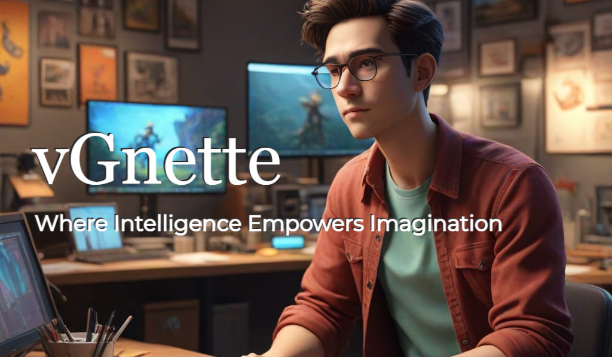
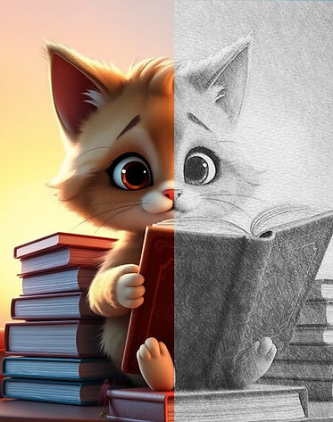
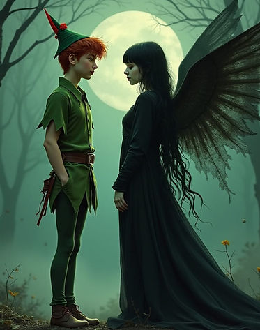
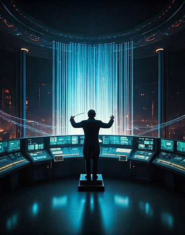

At vGnette, we are dedicated to revolutionizing the animation industry by tackling the challenge of consistency and coherence in AI-generated content. Our mission is to ensure uniformity in characters, styles, and environments across frames through cutting-edge innovation. By developing and fine-tuning proprietary AI models, we streamline workflows and optimize production for unparalleled efficiency. At the heart of vGnette lies a commitment to pioneering AI-driven storytelling, seamlessly blending technology with creativity to deliver high-quality visuals that captivate and inspire.
Characters & Copyright
Networks are trained on original, copyrighted characters to facilitate the creation of proprietary video content.
Visual Consistency
Specialized models ensure consistency in characters, style, and scenery throughout the film.
Orchestration
vGnette's™ proprietary AI models fine-tune and orchestrate a suite of intelligent tools, streamlining and optimizing the production process.
AI-generated films hold transformative potential in the entertainment industry, offering an exciting blend of advanced technology and storytelling. With the ability to streamline production, generate stunning visuals, and even craft immersive narratives, AI is redefining the way films are conceptualized and created. The perspectives surrounding this innovation suggest significant shifts, including:
In this emerging landscape, vGnette stands poised to play a pioneering role. By focusing on consistency and coherence in AI-generated animation, vGnette addresses critical challenges in maintaining quality and uniformity across complex productions. The company's proprietary AI models optimize workflows, ensuring that characters, styles, and environments remain synchronized across frames.
Furthermore, vGnette’s commitment to AI-driven storytelling positions it as a bridge between technology and creativity. By blending cutting-edge AI with human ingenuity, vGnette empowers filmmakers to produce seamless, high-quality visuals that captivate audiences and set new industry standards. As AI adoption in film production accelerates, vGnette is well-equipped to lead this revolution, shaping the future of cinematic storytelling.